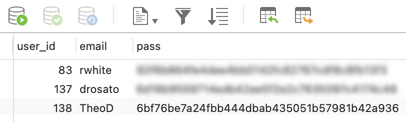
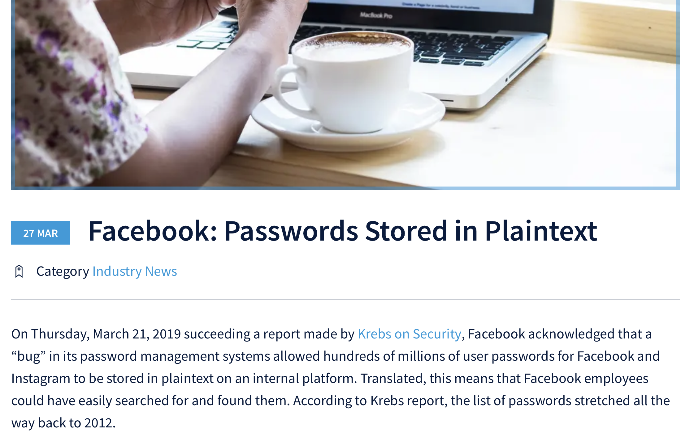
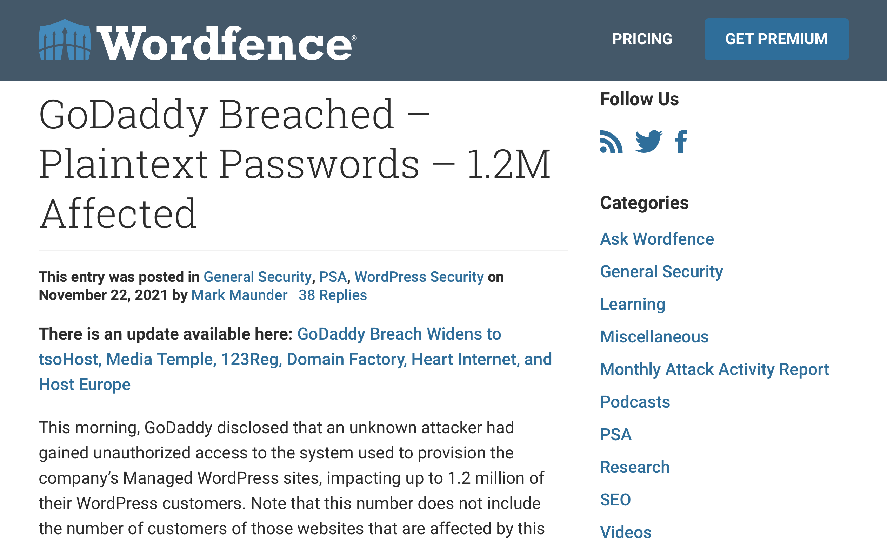
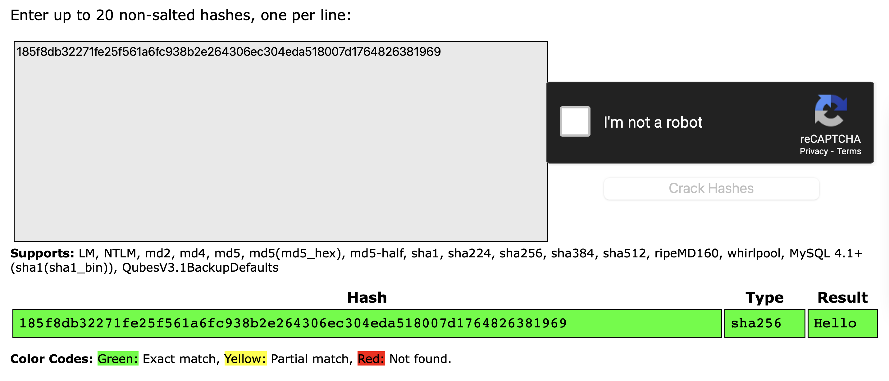

How to Get Hacked
aka Bad Things Can happen on the Internetz
Let's talk a little bit about passwords, hashes, bad guys, and staying safe!
1. What's a hash?
A hash is a one-way function that converts one value to another. Let's see how that works.
Launch a Terminal on your computer and enter this command:
In this example, the input is the password 123456 and the output is the long series of 64 characters.
If you change one of the characters in the password by even a single character, the hash output will be completely different.
This isn't encryption because we can't convert the hash value back to the original password.
So what's the point of having a hash?
2. How do passwords work?
When you provide a password to a service, whether it's an bad (simple) password or a good (complex) password, the password is typically hashed before storing in a database. That way the password can't be discovered.
Here's a student's password stored on a database used for next week's Capture the Flag competition. You can't really tell from this if TheoD's password is "123456" or "I am number one in Advent of Code!" The hash makes it impossible to "reverse engineer."
Here's the hash of somebody's password on our server:
You're not really going to be able to figure out what that is, ordinarily.
Sometimes, however, system administrators / programmers get lazy or make mistakes.

There are other issues that can arise as well.
3. Let's steal some passwords!
4. How to protect yourself
This is not the sexiest part of this presentation, but it might be the most important.
You need to use a Password Manager.
Your email address, once it's been used on the internet for any length of time, will show up in a hacked server, along with your password or your password hash. If you use weak passwords, or re-use passwords on multiple websites, bad guys will have access to your online information: Email. Bank accounts. Credit card accounts.
You can't afford to ignore this any longer.
HaveIBeenPwned?
Let's go to haveibeenpwned.com to find out if your email has been discovered in a hack.
So... you need a password manager.
How a password manager works
A password manager keeps track of your userIDs and passwords for all your websites online. You don't need to remember all the userIDs and passwords, because the manager keeps that information secure, protected by a single, strong password that you control.
This system of managing your online security does require that you trust the security practices of the service that you use. Most security professionals now consider the potential risk of using a well-established company to be much less than the risk of using a weak or insecure password on multiple websites.